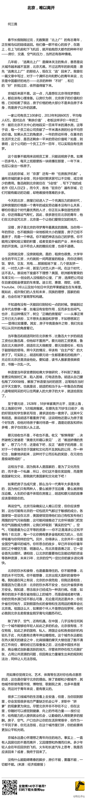

这个年代，中国媒体上扑面而来的和实现梦想有关的节目、报道、电影……总感觉有点不对劲，好像梦想无论说得多么冠冕堂皇，说到底要么是发财，要么就是出名。我们的社会是不是应该鼓励动画片《美食总动员（Ratatouille）》那种追求梦想的感觉？不求功名利禄，只求有机会能做自己喜欢的工作。
再贴一遍《蜗居》电视剧里的这段台词： 网页链接 来回来去说的，不就是这个么。 //@王风风风9:全同意@财经评论:【午间分享：北京，难以离开 】@何三畏 ：京城永远是心怀理想之青年向往的地方。除了高房价、雾霾，这里还有机遇。在中国，几乎没有任何其它一个城市能够给年轻人如此之多的机会。很多二三线城市的生活看上去安逸，但你会发现很多地方严重缺乏机会公平，求职中“拼爹”更为突出。网页链接 